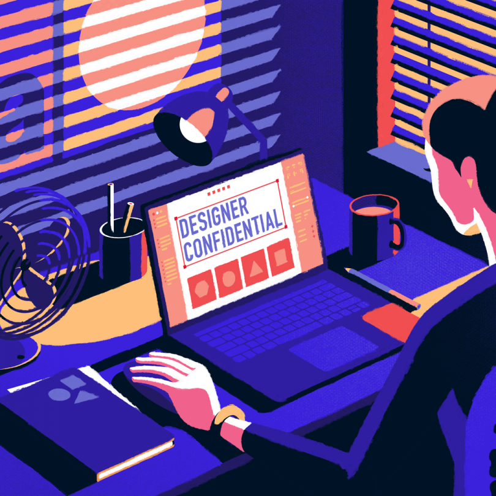

Welcome to the introduction page.
I'm doing both designing and coding.
Please click what you are interesting about me.

DESIGNER

DEVELOPER

DESIGN
I was born in Korea and I am learning English as a second language. To tell you a story about my dream of becoming a designer, Ever since I was young, I liked to make something with my hands. I like drawing, crafting, coloring, and especially using all the colors in the world. Maybe that's why I liked paints and palettes, never learned art, but I liked to see and imitate cartoons and paintings that I liked, but I never learned professionally, so I chose another major, and I dreamed of re-entering Canada when I was a sophomore in another university. I think it's amazing to make what I thought on a computer, and it's worth it.